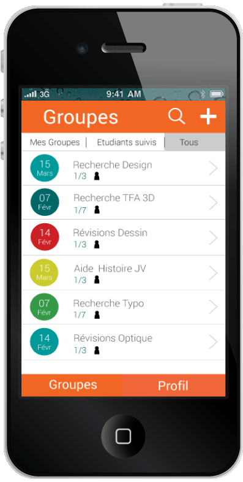

Concept
Notre web application, dédiée aux étudiants de la Haute École Albert Jacquard (option technique infographique), permet de créer des groupes de travail pour s’entraider ou s’entre-motiver quand l’utilisateur en ressent le besoin.
Pourquoi ? Parce que certains étudiants préfèrent ne pas travailler seuls.
Où ? Dans l’école.
-
Communauté
-
Échanges
-
Réussite
-
Créativité